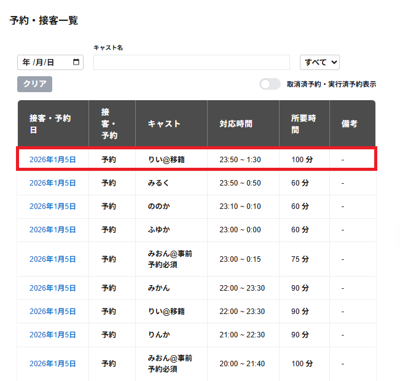

フッダーの画面右側に全予約確定ボタンが表示されます。
全予約確定ボタンをクリックすると、選択のタブの予約をすべて予約追加することができます。
以下の必須項目が選択・入力されていない場合は予約追加をすることができず、フッダーに以下の記載が表示されます。
複数の予約の選択のタブで全予約確定をクリックするをする場合、選択されていない選択の予約のタブも表示されます。
・接客日時が選択されていません
・キャストが選択されていません
・顧客が選択されていません
・予約方法が選択されていません
・支払方法が選択されていません
・プランが選択されていません
・予約方法が選択されていません(予約〇)
キャストの接客日時が重複している場合は全予約確定をすることができず、フッダーに以下の記載が表示されます。
・他の予約と重複しています
顧客の予約された来店の日時が一度の予約追加の操作で重複している場合は全予約確定をすることができず、フッダーに以下の記載が表示されます。
・他の予約と重複しています
